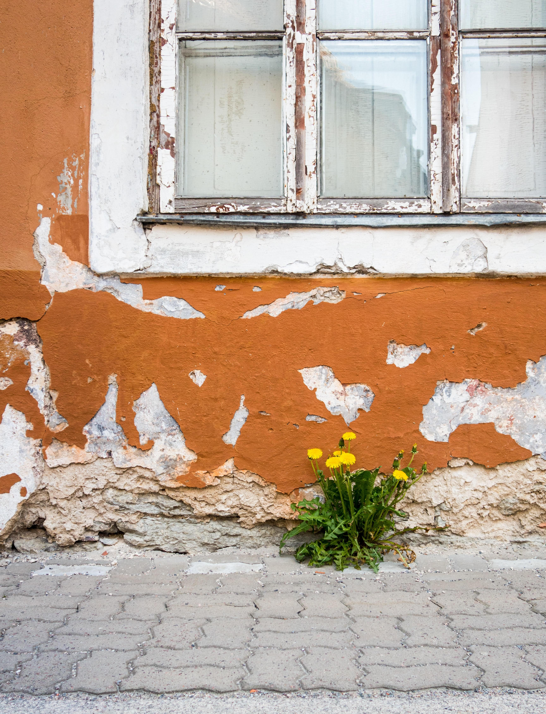

Has it ever happened to you…
Everything's hunky dory, but you aren’t?
Your thoughts are clear, but your mind isn't?
You know it’s none of your business, but then also you are concerned?
Is being emotional in this fast-accepting change, practical world not relevant? 🙃
A lot of questions on the outside but the answers are all inside.
What else is inside- दिल & आशा 💟ğŸ™
आशा here is not a desire but a hope. But is hope
worth having ?
Or again is it an emotional thing to be hopeful.
I think it is grateful if one is hopeful. It means you believe life’s going to get only better from
here.😅ğŸ˜
I read somewhere, “a quiet mind is more powerful than a positive mind”, but how will you quieten
your mind unless you have a positive mindset.
📌
Because a person with a negative mindset is always thinking.
And it is through your positive mindset that you are hopeful and eventually after a lot of effort can quiet
your thoughts. (ever experienced this stage?) 🙌
And why दिल है छोटा सा, छोटी सी आशा and not have a big heart and bigger hopes.
To have a big heart and bigger hopes, you don’t need 💸, just a broad outlook and again it comes from a
positive frame of mind and with that will come
whatever your आशा 🤑 ğŸ™
